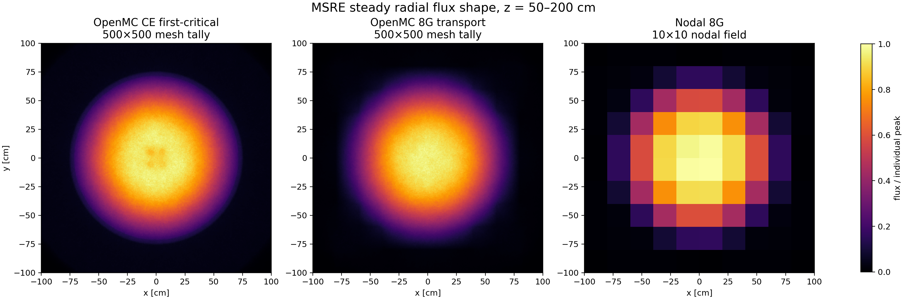
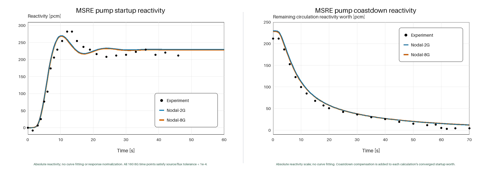

1. Multi-fidelity MSRE kinetics analysis
Group constants are generated from an OpenMC continuous-energy model through energy-group condensation and spatial homogenization. The resulting few-group data are transferred to a GPU-accelerated three-dimensional nodal solver coupled with a circulating-fuel kinetics model.
Results
Steady-state neutron-flux distributions and MSRE pump startup and coastdown transients are assessed against high-fidelity calculations and publicly available test data.

